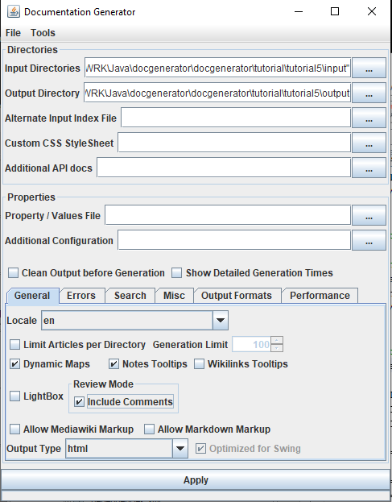
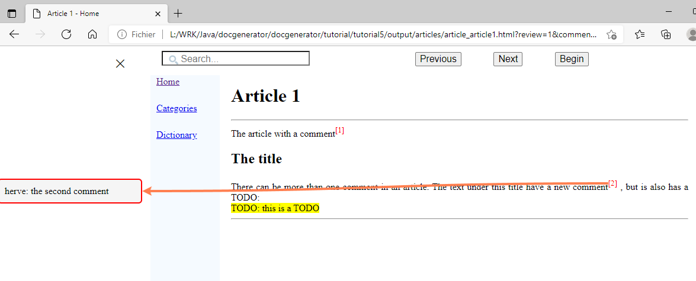
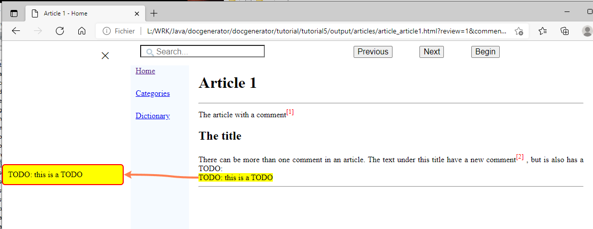

Home
Categories
Dictionary
Download
Project Details
Changes Log
What Links Here
How To
Syntax
FAQ
License
Review system tutorial
1 Create an index article
2 Create a first article with comments and todos
3 Create a first article with comments
4 Generate the wiki
5 Open the wiki
5.1 Start the navigation
5.2 Navigate through the comments
5.3 Exist the review mode
6 See also
2 Create a first article with comments and todos
3 Create a first article with comments
4 Generate the wiki
5 Open the wiki
5.1 Start the navigation
5.2 Navigate through the comments
5.3 Exist the review mode
6 See also
This article is a tutorial to add a review system to your wiki. You will:
Now you will create only an index article. Let's write our index article:

Click on the "Review" button to enter the "Review" mode: A slider menu appear at the left, with the first comment in a box:

Click on the "Next" button to go to the next comment. In fact the next comment is a todo, so the background of the box is yellow:
- Create an index article
- Create a first article with comments
- Create a second article with comments
- Generate the wiki and include comments in the generation
Create an index article
Choose an empty directory to put your articles.Now you will create only an index article. Let's write our index article:
<index> The index for the tutorial wiki. </index>
Create a first article with comments and todos
We will create a first article with a comment and a todo. Let's do it:<article desc="article 1" > The article with a comment<comment author="herve" comment="the comment text" /> <title title="the title" /> There can be more than one comment in an article. The text under this title have a new comment<comment author="herve" comment="the second comment" />, but is also has a TODO: <todo reason="this is a TODO" /> </article>
Create a first article with comments
We will create a second article with a comment. Let's do it:<article desc="article 2" > The article with a comment<comment author="herve" comment="the comment text" date="2022-03-01"/> </article>
Generate the wiki
Let's generate our wiki. Double-click on the jar file of the application and:- Input directories: Set your directory (with only the index.xml file for the moment)
- Output directory: Set another empty directory for the HTML wiki result
- Review Mode: Check the "Include Comments" checkbox
- Click on "Apply"

Open the wiki
Start the navigation
Double click on the "index.html" file in the output directory. We have the following page:
Click on the "Review" button to enter the "Review" mode: A slider menu appear at the left, with the first comment in a box:
Navigate through the comments
Click on the "Next" button to go to the next comment:
Click on the "Next" button to go to the next comment. In fact the next comment is a todo, so the background of the box is yellow:

Exist the review mode
Click on the cross in the slider menu to exist the review mode. We go back to the start page:
See also
- Review system: This article is about the review system
×

Categories: Tutorials